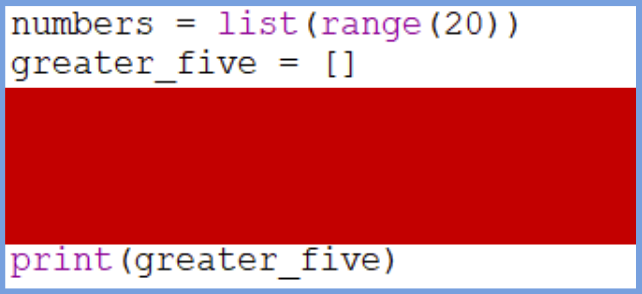
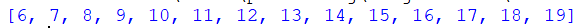
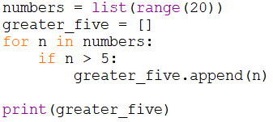
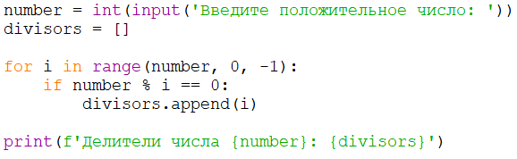
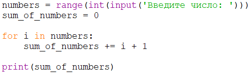
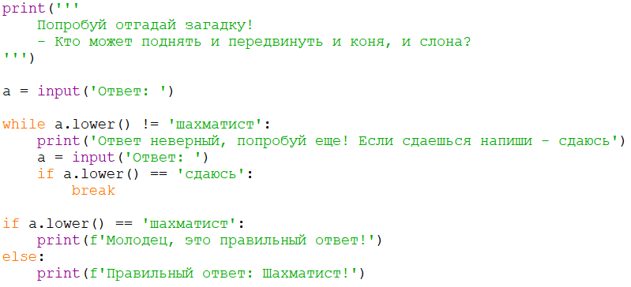
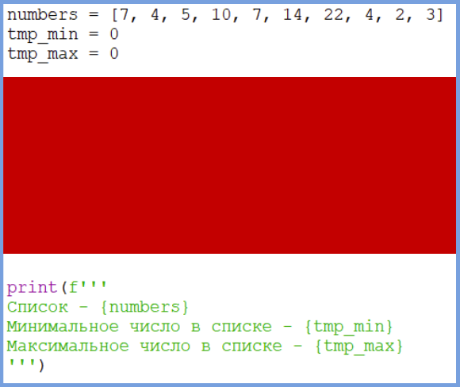
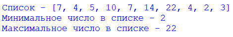
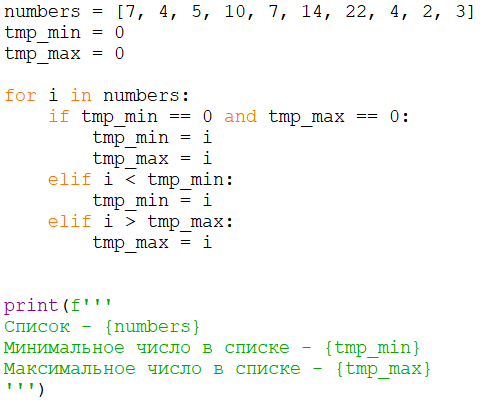

1
Числа больше пяти
легкоавтопроверка
Создай программу, которая сохраняет в список числа больше 5 из набора положительных чисел.


Показать ответ (сначала попробуй сам!)

Заставляем компьютер повторять действия: перебираем списки, считаем суммы и пишем первые игры.
Создай программу, которая сохраняет в список числа больше 5 из набора положительных чисел.



Создай программу, которая сохраняет в список все делители числа.

Создай программу, которая выводит сумму ряда чисел с шагом 1 (арифметическая прогрессия).
Пример
5 -> 5 + 4 + 3 + 2 + 1 = 15 3 -> 3 + 2 + 1 = 6

Создай программу, которая загадывает загадку и в зависимости от ответа выдаёт результат. Используй цикл while.

Создай программу, которая находит самое большое и самое маленькое число в списке (без min() и max()).



Пользователь вводит число. Выведи для него таблицу умножения от 1 до 10.
Пример работы
Число: 7 7 x 1 = 7 7 x 2 = 14 ... 7 x 10 = 70
n = int(input('Число: '))
for i in range(1, 11):
print(f'{n} x {i} = {n * i}')Пользователь вводит число n. С помощью цикла while выведи числа от n до 1, а в конце — «Старт! 🚀».
Пример работы
С какого числа? 3 3 2 1 Старт! 🚀
n = int(input('С какого числа? '))
while n > 0:
print(n)
n -= 1
print('Старт! 🚀')Пользователь вводит целое число. Посчитай сумму его цифр.
Пример работы
Число: 12345 Сумма цифр: 15
Можно перебрать строку символ за символом: for digit in text:, а можно в цикле брать остаток n % 10 и делить n //= 10.
text = input('Число: ')
total = 0
for digit in text:
total += int(digit)
print('Сумма цифр:', total)Классическая задача программистов! Выведи числа от 1 до 30, но:
Начало вывода
1 2 Fizz 4 Buzz Fizz 7 ...
for i in range(1, 31):
if i % 15 == 0:
print('FizzBuzz')
elif i % 3 == 0:
print('Fizz')
elif i % 5 == 0:
print('Buzz')
else:
print(i)Компьютер загадывает случайное число от 1 до 50 (from random import randint). Игрок угадывает, а программа подсказывает «больше» или «меньше». Когда число угадано — выведи количество попыток.
Бесконечный цикл while True: можно прервать командой break.
from random import randint
secret = randint(1, 50)
print('Я загадал число от 1 до 50. Угадаешь?')
tries = 0
while True:
guess = int(input('Твой вариант: '))
tries += 1
if guess < secret:
print('Моё число больше ⬆')
elif guess > secret:
print('Моё число меньше ⬇')
else:
print(f'Угадал за {tries} попыток! 🎉')
break